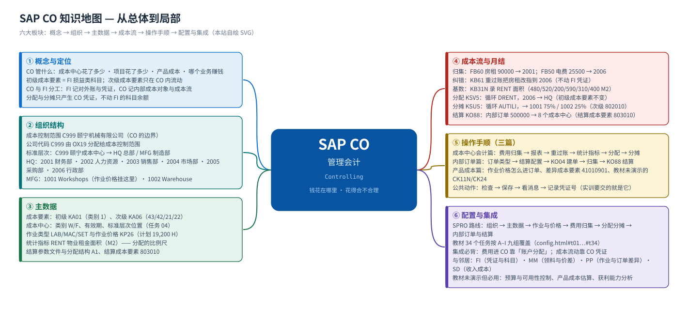
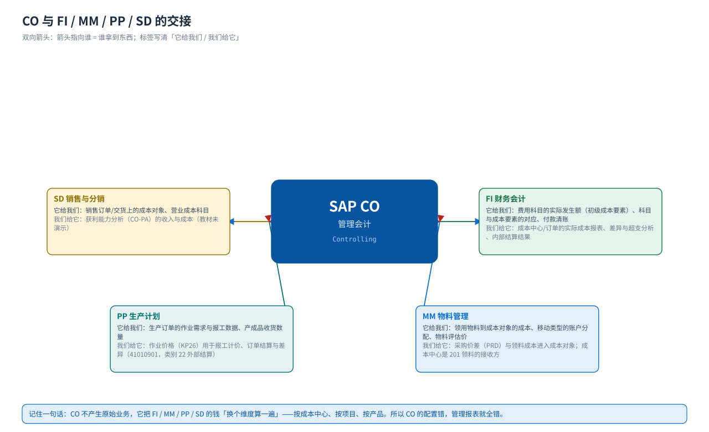
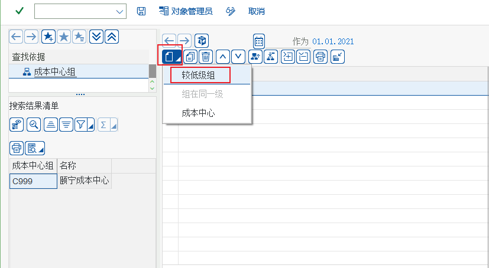
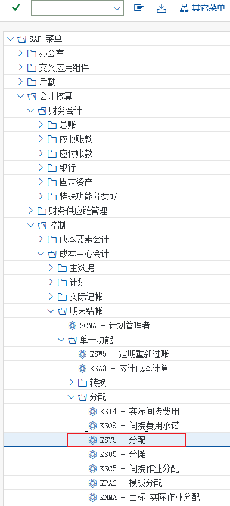
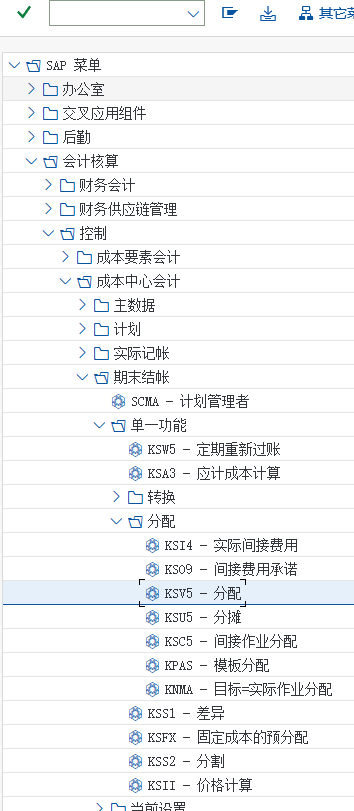

首页 · 课程地图与学习路线
CO 管什么 · 怎么学 · 学完能做什么
CO（管理会计 / Controlling）回答的是另外一个问题：FI 记录「公司赚了多少」，CO 记录「钱花在哪个部门、哪项活动、哪个项目上，花得合不合理」。本站按「概念 → 组织 → 主数据 → 成本流 → 分步操作手顺 → SPRO 配置 → 实训」讲，每个环节都配教材原书的真实 SAP GUI 画面。
14页课程页数
34个任务教材 CO 全部任务，逐个走查
126步手顺步骤（含截图）
282处实机截图引用
学习路线：从总体到细节
① 概念CO 管什么、和 FI 怎么分工→② 组织成本控制范围 / 标准层次→③ 主数据成本要素 / 成本中心 / 作业类型→④ 成本流归集 → 分配分摊 → 结算→⑤ 操作手顺成本中心 · 内部订单 · 产品成本→⑥ 配置SPRO 34 个任务→⑦ 实训五个动手任务→⑧ 自测30 题 · 合格 75%
建议的学法先看 概念 建立「谁产生什么成本、成本最后到哪去」的整体印象，再按 组织 → 主数据 把数据坐标立起来，然后走一遍 成本流；最后拿 成本中心会计、内部订单、产品成本 三篇当操作手册，在系统里照着做；配置篇 是后台的完整索引。
模块地图
{kind=link}

六大板块
① 概念与定位CO 的四大子模块、初级/次级成本要素、CO 凭证与 FI 凭证的分工；12 个常见误解
② 组织结构成本控制范围（与公司代码的关系）、成本中心标准层次、成本中心组与成本中心
③ 主数据成本要素（初级 KA01 / 次级 KA06）、成本中心、作业类型 KL01、统计指标 KK01、结算参数文件
④ 成本流费用归集 → 重过账 KB61 → 分配 KSV5 → 分摊 KSU5 → 内部订单结算 KO88 → 报表查看
⑤ 操作手顺三篇局部详解：成本中心会计、内部订单、产品成本（含教材未演示的标准功能）
⑥ 配置与实训SPRO 34 个任务（IMG 路径 + 手顺 + 原始画面）、五个实训、30 题自测
集成关系：CO 不是孤岛
{kind=link}

| 邻居模块 | 给它（CO 提供） | 它给 CO | 典型凭证/接口 |
|---|---|---|---|
| FI 财务会计 | 管理会计口径的成本报表、成本中心超支分析、内部结算结果 | 费用科目的实际发生额（初级成本要素）、总账科目与成本要素的对应、付款与清账 | FB50/FB60 录入时填「成本中心 / 内部订单」= 账户分配 |
| MM 物料管理 | 领用物料到成本对象的成本（201/261 领料的借方） | 采购价差（PRD）、移动类型的账户分配（成本中心/订单）、物料评估价 | 物料凭证牵动的会计凭证里带成本对象 |
| PP 生产计划 | 生产订单的成本归集、作业价格（KP26）用于报工计价、订单结算与差异（41010901） | 生产订单的作业需求（作业量）、报工数据、收货数量 | 生产订单 = CO 里的成本对象；差异进 41010901（类别 22 外部结算） |
| SD 销售与分销 | 销售订单/交货带来的收入与成本（获利能力分析 CO-PA，教材未演示） | 销售订单上的成本对象、营业成本科目 | CO-PA 基于结算/开票的收入成本行 |
教材场景（颐宁公司）
本站所有示例值都来自教材《S4.docx》CO 模块的画面，不是标准值 —— 换到自己的系统请按页面里写的「怎么确认」核对。
| 对象 | 教材值 | 说明 |
|---|---|---|
| 成本控制范围 | C999 颐宁机械有限公司 | 任务 01/03 建立并激活；起始财年 2021 |
| 公司代码 | C999 | 任务 02 用 OX19 把公司代码分配给成本控制范围 |
| 成本中心标准层次 | C999 颐宁成本中心 → HQ 总部 / MFG 制造部 | 任务 04 用 OKEON 维护 |
| 成本中心组 HQ（总部） | 2001 财务部 Financial · 2002 人力资源 HR · 2003 销售部 · 2004 市场部 · 2005 采购部 · 2006 行政部 Admin | 成本中心类别 W（管理机构） |
| 成本中心组 MFG（制造部） | 1001 Workshops · 1002 Warehouse | 作业类型与作业价格就挂在 1001 上 |
| 初级成本要素 | 55020141 管理费用-租金 · 41050121 电费 · 41010901 生产成本－生产订单差异（类别 22 外部结算） | 任务 05 KA01；损益类科目大多要建成初级成本要素 |
| 次级成本要素 | 801020 机器时间分配 · 801030 准备时间分配 · 802010 电费分摊 · 803010（订单结算成本要素） | 任务 06 KA06；只在 CO 内流动，FI 里没有对应科目 |
| 作业类型 | LAB 人工工时 · MAC 机器工时 · SET 准备工时（单位 H） | 任务 10 KL01；计划作业量各 19,200 H |
| 作业价格 | MAC 固定 460.00 / 可变 170.00；SET 固定 300.00 | 任务 12 KP26；版本 0 / 期间 1–12 / 财年 2021 / 成本中心 1001 |
| 统计指标 | RENT 物业租金面积（单位 M2） | 任务 18 KK01 定义、任务 19 KB31N 录数量 |
| 分配循环 | DRENT / 段 RENT（发送方 2006，接收方 HQ，按 RENT 实际统计值） | 任务 20 定义、任务 21 KSV5 执行 |
| 分摊循环 | AUTILI / 段 UTILITIES（接收方 1001 = 75%、1002 = 25%，分摊成本要素 802010） | 任务 23 定义、任务 24 KSU5 执行 |
| 内部订单类型 / 订单 | PMKT 市场活动 / 内部订单 500000 | 任务 27 定义类型、任务 31 用 KO04 建单 |
| 结算配置 | 结算参数文件 20（画面）/ 教材文字写 100；分配结构 A1；结算成本要素 803010 | 任务 28/29/30 |
| 费用示例 | 房租 90000 元（供应商 30000001 佳音地产，成本中心 2001）· 电费 25500 元（成本中心 2006） | 任务 14 FB60 / 任务 15 FB50 |
代表性画面（先建立整体印象）
下面六张是教材原书 CO 主线上的关键画面，按「组织 → 主数据 → 作业价格 → 分配 → 分摊 → 结算」排列；后面每一页都会逐屏展开（每张图都带「画面 N」编号与原图文件名）。
{kind=link}



{kind=link}

{kind=link}


怎么用这个站
- 带「画面 N」编号的图 = 教材原书的 SAP GUI 实机截图（中文界面），图注里保留原图文件名，可回 Word 原稿逐张核对。
- 图注写「本站自绘 SVG」的 = 我们画的流程图/结构图/思维导图，用于讲清结构与顺序；图上的数值是课程场景值。
- 每页底部都有「其他模块」的入口；顶部横条可以在 MM / PP / FI / CO 与总览之间跳转。
- 配置篇的每个任务都给出「IMG 路径 + 手顺步骤 + 教材画面」，路径可以点击左侧小图标复制。
- 教材没有演示、但项目里一定会用到的标准功能（产品成本估算、预算与可用性控制、获利能力分析等），页面上都明确标注了「教材未演示」—— 学完本模块可以照着 F1/F4 与 IMG 路径自己扩展。